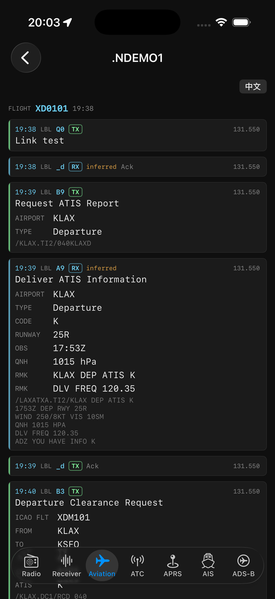
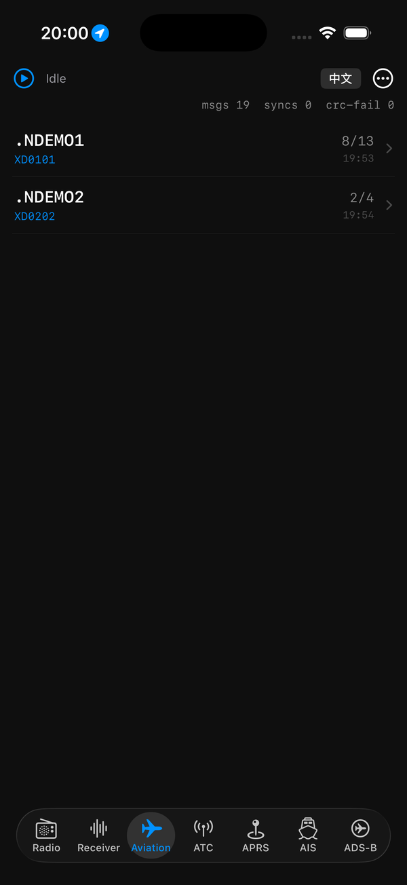
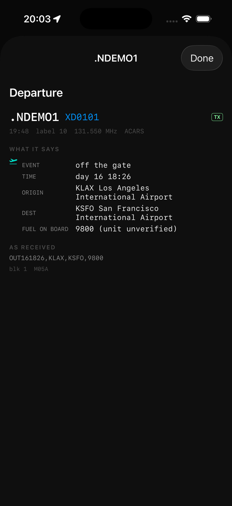
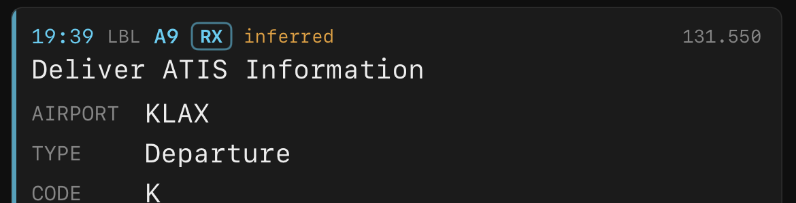
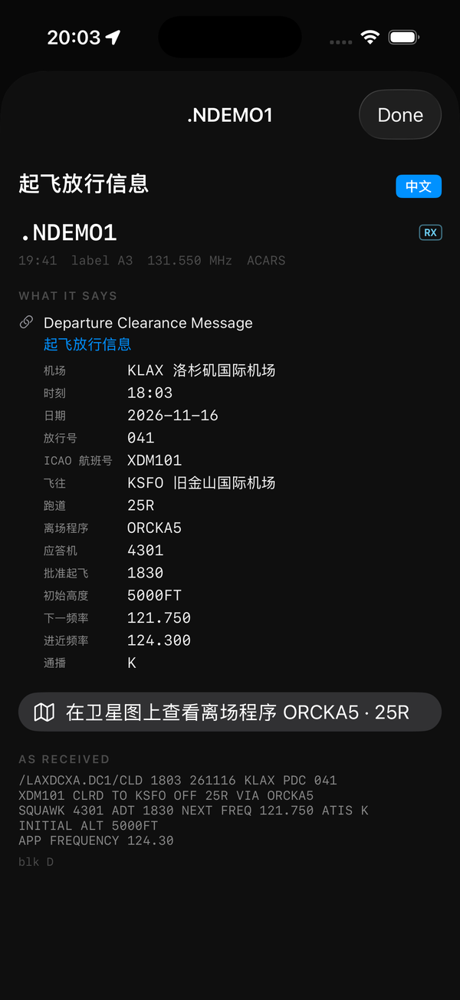
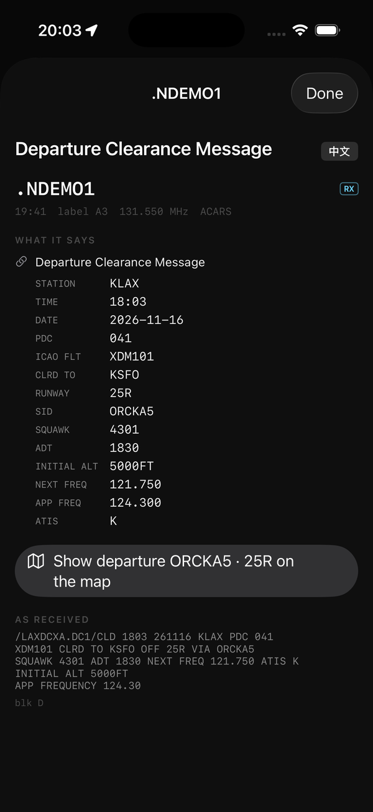
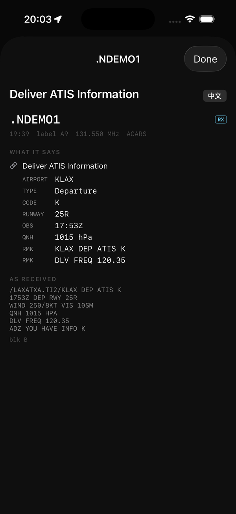
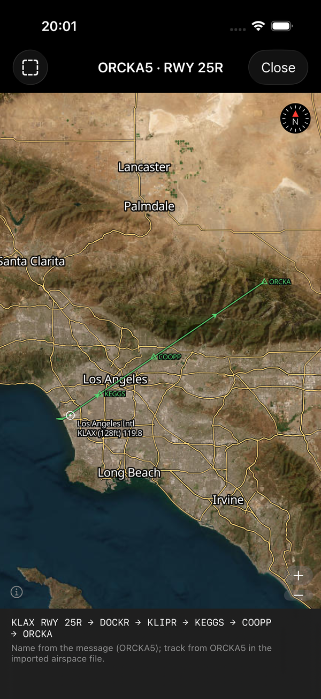

Aviation data link
Besides talking, aircraft and the ground exchange text all the time: asking for the ATIS, asking for a clearance, reporting pushback and take-off times, receiving weather. Those messages travel over ACARS and VDL2. This page receives them, files them by aircraft and flight, and reads the common ones into a table anyone can follow.

About the pictures. The messages here were written for this manual: the aircraft .NDEMO1 and flight XD0101 do not exist, the text follows the format of real messages, and the setting is Los Angeles. What you receive looks the same. Keep what you receive for your own study, and follow your local law.
Starting
- Choose the right regionTap … at the top right → Settings, and pick where you are under Region. The frequencies differ: 131.450 MHz in China, 131.550 MHz in North America, another set in Europe. The wrong one is empty air.
- Tap playThe receiver listens to several of the region's frequencies at once. Listen around moves to another group, or to VDL2 (round 136.975 MHz, a newer link).
- WaitA data link is short bursts, not a continuous signal like a broadcast. Near an airport there is one every few tens of seconds; far from one it can be minutes. msgs at the top is how many have arrived.
Use the antenna you use for the air band (as on the ATC page), and make sure the receiver's frequency calibration is done: the channels are narrow, and a little off is nothing at all.
Three levels: aircraft → flight → message


- Aircraft: listed by registration (the aircraft's number plate), with the flight it is operating in small type, the message count on the right (8/13 means 8 of 13 carry content) and when it was last heard.
- Flight: inside an aircraft, messages are grouped by flight and run in time order, as in the first picture.
- Message: tap one for the whole reading. WHAT IT SAYS is what was read out of it, and AS RECEIVED is the text exactly as it arrived.

TX was sent by the aircraft and RX was sent to it by the ground. After LBL is the message's type code (B9, A9, B3…). On the right is the frequency it arrived on. inferred means the message itself named no flight, and was filed under this one from the same aircraft's other messages. The title line is the kind of message, with its fields below.
The 中文 button at the top right changes the reading to Chinese: the field names, and airport names after their codes.

Following one departure
Read together, an aircraft's messages before take-off are the whole preparation for a departure. In the demonstration, XD0101 is going from Los Angeles to San Francisco:
| # | Direction | Message | What is happening |
|---|---|---|---|
| 1 | aircraft → ground | Request ATIS Report | The crew ask for the Los Angeles departure ATIS. |
| 2 | ground → aircraft | Deliver ATIS Information | It arrives on the flight deck: information K, departures from 25R, pressure 1015. |
| 3 | aircraft → ground | Departure Clearance Request | The request: at gate 41, for San Francisco, with information K. |
| 4 | ground → aircraft | Flight System Message | "Request received, being processed, stand by." |
| 5 | ground → aircraft | Departure Clearance Message | The clearance: runway 25R, the ORCKA5 departure, squawk 4301, initially 5,000 ft, next frequency 121.750. |
| 6 | aircraft → ground | Departure Clearance Read Back | The crew send it back as received, to confirm it. |
| 7 | aircraft → ground | Departure (OUT) | Off the gate at 18:26, fuel on board 9800. |
| 8 | aircraft → ground | Departure (OFF) | Airborne at 18:34. |
None of this is heard on a voice frequency. At large airports most clearances now go by data link instead of being read out.
What a clearance says


| Field | Meaning |
|---|---|
| CLRD TO | The destination the flight is cleared to. |
| RUNWAY | The departure runway. |
| SID | The departure procedure: the fixed route out of the airport after take-off. |
| SQUAWK | The transponder code. The same number is the first line of the aircraft's label on the ADS-B page. |
| ADT | The approved departure time. |
| INITIAL ALT | The first altitude to climb to. |
| NEXT FREQ | The next frequency to call (here, ground). |
| APP FREQ | The approach / departure frequency after take-off. |
| ATIS | The ATIS information the crew already have. |
The departure, drawn on the map
ORCKA5 in the clearance is only a name. With an airspace data file imported, a button appears under the message, Show departure ORCKA5 · 25R on the map. Tap it:


There is the route this aircraft is about to fly: off runway 25R, by DOCKR, KLIPR, KEGGS and COOPP to ORCKA. Every fix is listed under the map.
Three pages meet here:
- Aviation says which departure the aircraft was cleared for, and its transponder code.
- On ADS-B, turn on the same departure, and minutes later watch it take off and fly out along that line, with the same code on its label.
- On ATC, go to the next frequency the clearance gave and hear it talk to ground and tower.
The button appears only when the procedure name, airport and runway in the clearance match exactly one procedure in your file. When they do not, the page says why in its place; it never draws a route that is merely close.
What else arrives
| Kind | What it carries |
|---|---|
| Digital ATIS (D-ATIS) | Runways in use, weather, pressure. The voice ATIS, as text. |
| Departure clearance (DCL) | Request, acknowledgement, clearance, read-back: the sequence above. |
| Out, off, on, in | The four times an airline measures punctuality by, usually with both airports and the fuel on board. |
| Weather | METAR observations and TAF forecasts sent to the crew; the Chinese display reads them out as wind, visibility, cloud and temperature. |
| Position reports | The aircraft's coordinates, altitude and estimates. |
| Maintenance reports | Engine figures and fault codes. The system concerned is named; the detail belongs to the manufacturer's manuals. |
| Link tests and acknowledgements | Link test, Ack: the aircraft and the ground confirming the link, with no content. The most numerous. |
| Frequency changes | The ground moving an aircraft to another data-link frequency. The page tells you which of those you are not listening to. |
| Not decoded | Airlines define many formats of their own. A message that is not recognised is marked so and shown as received. |
Content only in the settings is on by default: the aircraft list goes by messages with content, and an aircraft that only ever sent link tests and acknowledgements takes no room.
Common situations
| What you see | Why, and what to do |
|---|---|
| Nothing arrives | Check Region first, then the frequency calibration, then wait a few minutes more. Far from an airport, with an antenna indoors, there may truly be nothing to hear. |
| syncs rises, msgs does not | The start of a transmission was heard and its contents failed their check: the signal is weak. Improve the antenna's position. A few of these are normal. |
| Only Link test and Ack | Normal; those are the commonest. Messages with content come mostly before departure and after landing, and are easier to hear near an airport. |
| An aircraft with no flight number | Only messages sent by the aircraft carry one. If only the ground's messages to it were heard, it is listed by registration alone. |
| A note about frequencies not being heard | The receiver covers about 1 MHz at a time. Some airports' traffic is in another group; try it under Listen around. |
| No map button under a clearance | No data file is imported, or the file does not have that procedure. A line where the button would be says which. |
| Many messages not decoded | Normal. Airline formats are not published, and the app does not guess. |